[CVE-2020-5405] spring-cloud-config-server 路径穿越漏洞复现
环境配置
源码：https://github.com/spring-cloud/spring-cloud-config/releases/tag/v2.1.1.RELEASE
Configserver.yml文件配置，配置为本地，此漏洞一大限制就是当配置为git时无法进行路径穿越
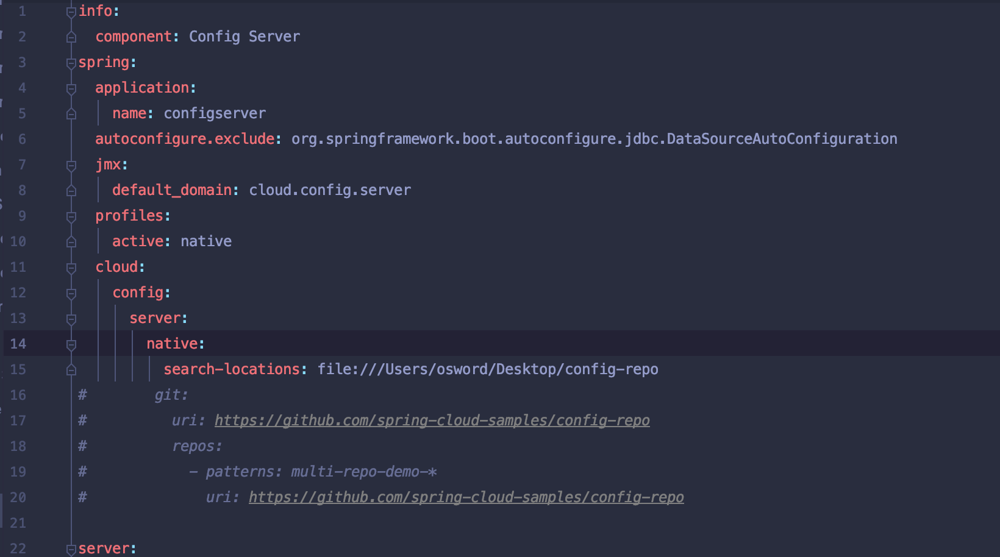
漏洞分析
根据网上分析路由直接打桩
路由请求方式”http://url/{name}/{profile/{label/**}}"
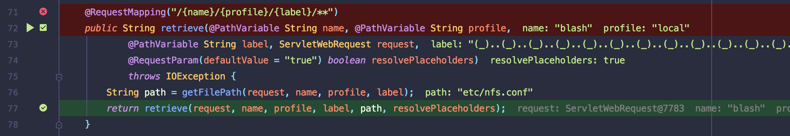
跟进retrieve方法中，造成路径穿越的原因之一就是resolveLabel函数
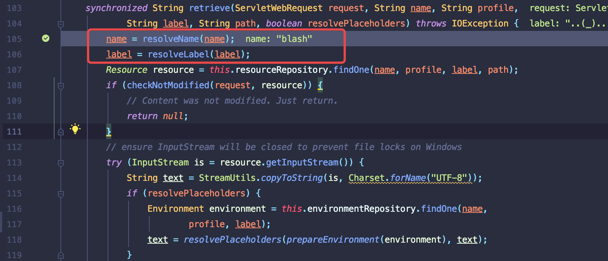
可以看到对路径符号/替换为(_)
所以可以构造路径转好符号..(_) => ../
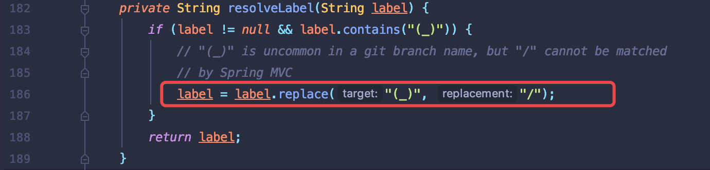
可以构造路径穿越符号，现在关注点就是获取资源是否对路径或者资源进行限制.
确定资源需要跟进findOne方法.
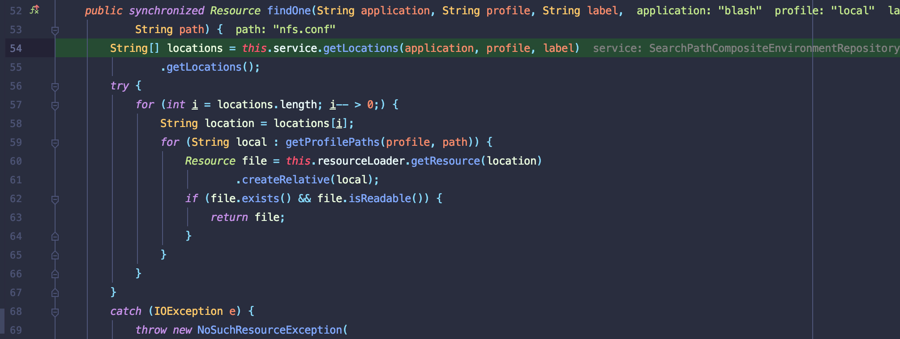
可以看到以下代码都是对locations变量进行操作，具体跟进下
跟进getLocations方法，
获得本地search-Locations路径

替换模版中变量为字符
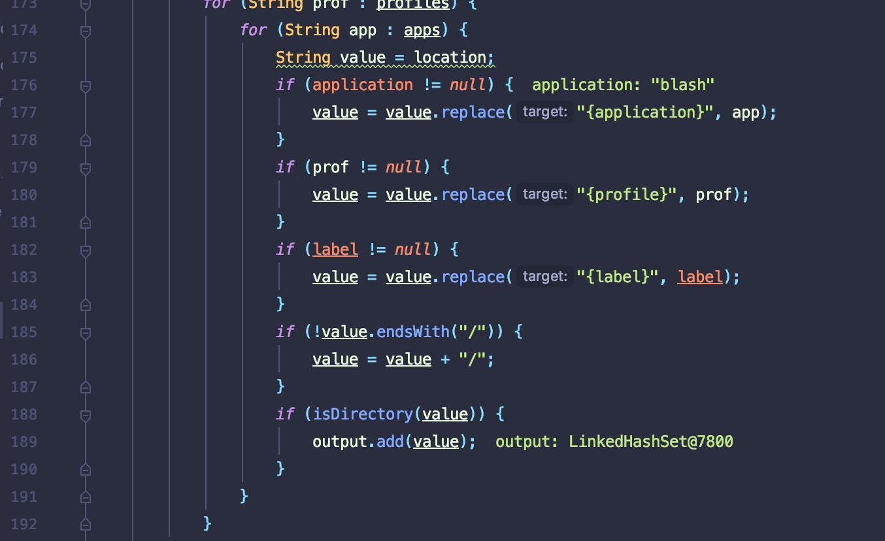
拼接lable
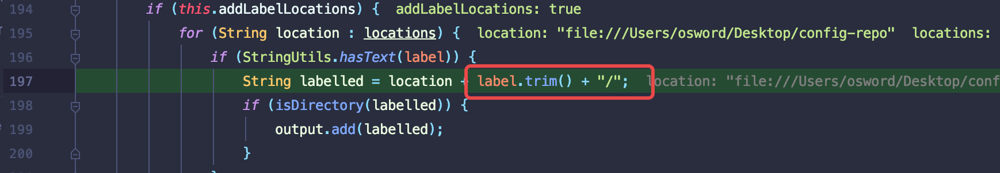
最后得到Locations结果
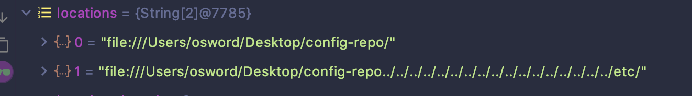
循环遍历locations数组，最后返回file对象.其中造成漏洞的参数为
file:///Users/osword/Desktop/config-repo../../../../../../../../../../../../../../../../../etc/
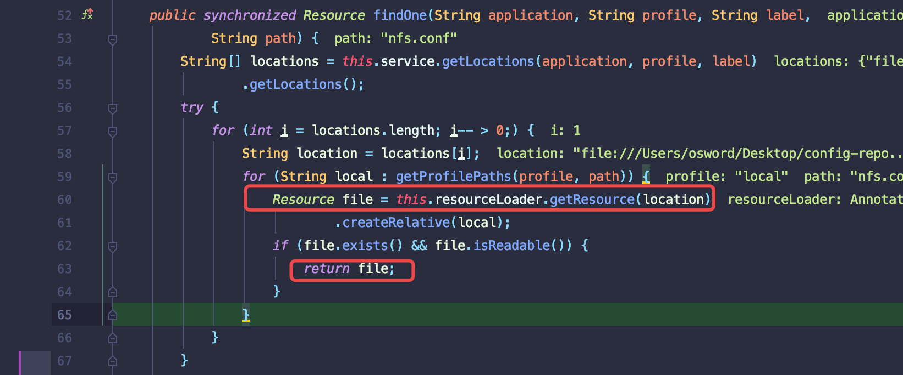
跟进getReource方法
getResource方法中会调用parseUrl方法解析该字符为请求的Url,在经过一次cleanPath方法清洁返回file:/../../../../../../../../../../../../etc/,最后以此最为URl对象参数并返回
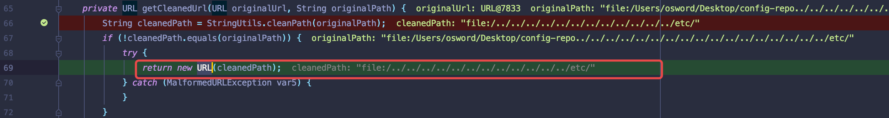
最后调用createRelative指定相对路径参数，这里就是需要读取的文件名.
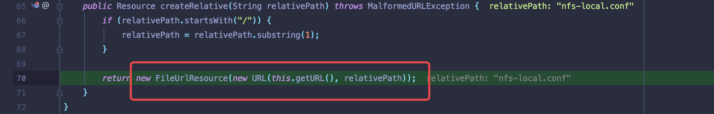
漏洞复现
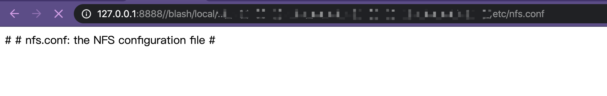
漏洞限制
- 无法读取无后缀的文件
- 多传一级目录，parseUrl处理时会删除第一个
/../ - 配置为native
漏洞修复
https://github.com/spring-cloud/spring-cloud-config/commit/651f458919c40ef9a5e93e7d76bf98575910fad0
在获取返回URL对象时候就对路径穿越符号进行消毒.
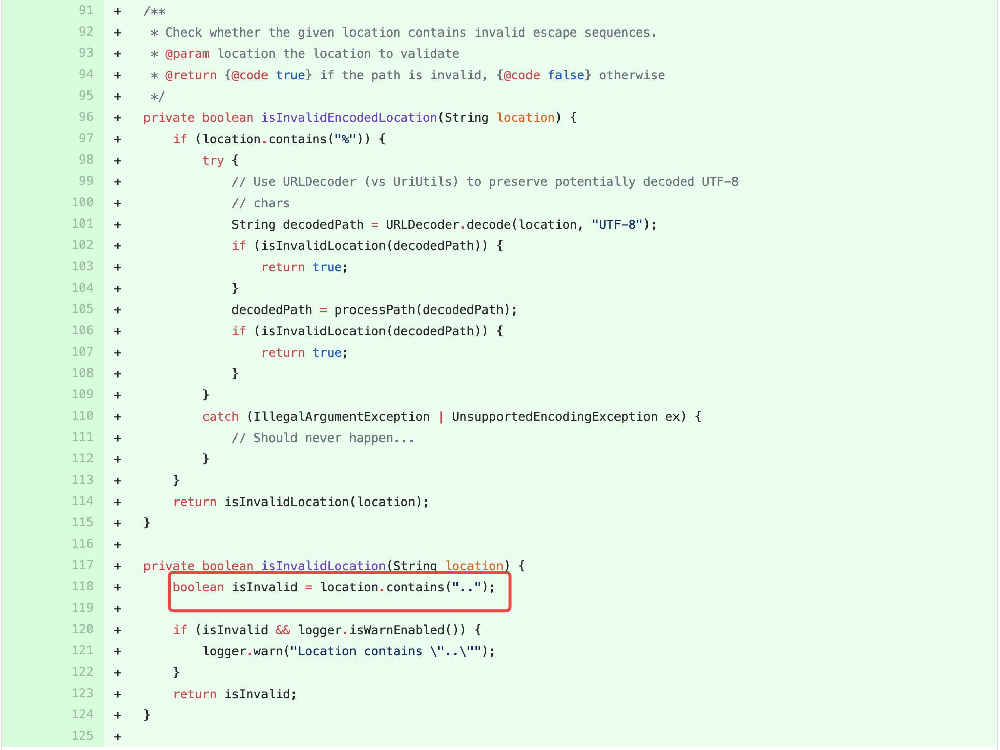